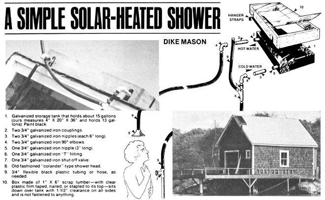

Is it possible to use the sun to do useful household chores at latitudes north of Toronto, Canada? Of course! And if our experience in building and using the simple solar-heated shower (shown here) on an island off the coast of Maine is any indication, it's not only possible . . . but practical, economical, fun, and a great subject of cocktail party conversation too!
This, by the way, is no ordinary solar-heated shower either. This is our family's incredible Mark IV Model . . . and it incorporates a number of subtle improvements over its predecessors. (The Mark I-merely a black tank of water with no "greenhouse" over it-didn't warm up enough to be worthwhile. The Mark II did have a greenhouse and got so hot that the pressure of its contents burst the tank. We thought we'd taken our concept as far as it could go with our Mark III design, which had a heavy-duty storage tank, greenhouse, and insulation. As it turned out, though, the world just isn't ready yet for the sheer genius of that model: It worked so well that it scalded the first guest who used it. The detuned Mark IV, though-which is basically the Mark III without insulation-seems just about right.)
You should be able to find everything you'll need for the fabrication of this water heater at your friendly neighborhood dump or secondhand store (see the accompanying drawing). We soldered the hanger straps (two pieces of galvanized iron, each one inch wide and two to three feet long) to the bottom of our heater's tank and bent them so they'd hang over our cabin's ridge-pole and catch two headless nails on the other side.
Next, we punched the two holes in the left side of the tank and soldered 3/4" galvanized couplings over them. The two 3/4" galvanized iron nipples (each 6" long) were then installed with their 90° elbows (which "aim" the pipes coming out of the tank down toward the shut-off valve and shower below).
The open-ended standpipe, which comes out of the cold water inlet line right at the elbow and which then extends about 6" above the top of the water heater's tank, is the system's "pressure relief device". Crude, but when used properly, nothing more complicated or sophisticated is needed.
The cold water shut-off is our rig's only control. When someone wants to use the shower, he or she steps into the stall, gently turns on the cold water, and then has enough time to take off his or her clothes before the first warm water starts running out of the shower head. The stream then turns hot almost immediately and-if you move reasonably expeditiously-you can soak down, lather up thoroughly, and-at that point-turn the water off. The shower will then continue to run just long enough to rinse you off completely.
Or, to put it another way, our solar-heated storage tank is located about 10 feet above our shower's head. This gives enough gravity pressure for comfortable bathing . . . but not so much pressure that we waste a great deal of water. The 13-gallon reservoir generally provides us with three generous or four skimpy showers on the average summer day.
When the sky is overcast, the heater's water runs about 85°F, and on a clear, sunny day the temperature goes up to 110° . . . the maximum bearable. On very hot days, the shower is simply too blistering to use in the middle of the afternoon. When this happens, we either bathe at noon (in which case, the reservoir reheats its contents enough for evening showers) or just wait until the sun goes down and our tank of water cools off a bit.
This, of course, is purely a summer cabin setup and we've hung our solar water heater out in the spring and taken it back in during the fall for the past two years. The whole shebang-even if all pipe fittings, the wood for the greenhouse box, etc., are bought new-shouldn't run over $35. Scrounge up most of the components, as we did, and you should get by for far less. Either way, after two summers of fuel-free hot water, we think our solar-heated shower is worth the price.
|
 PHOTOS BY DIKE MASON |
|
|